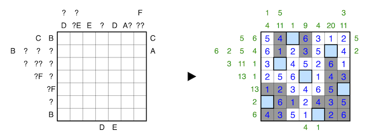

Shade some cells such that all unshaded cells are orthogonally connected, and all orthogonally connected groups of shaded cells touch the edge of the grid. The empty cells act as holes in the grid, connectivity is obstructed by these holes.
Clues outside the grid to the top and left indicate the sums of connected groups of either shaded or unshaded numbers in the respective row or column, in order, where numbers in cells with the opposite shading serve as delimeters between groups. Empty cells also serve as delimeters between groups. All the columns are for one of either shaded or unshaded, and all of the rows are for whichever type of shading the columns is not.
Clues to the right and bottom of the grid indicate that the Nth cell seen from the direction of the clue is the empty cell in the row or column shared with the clue.
The letters A to I replace numbers from 0 to 9, and no two letters may replace the same number. A question mark can be any number from 0 to 9, and for all clues, none may have a leading zero.
A 1-6 example is provided:
